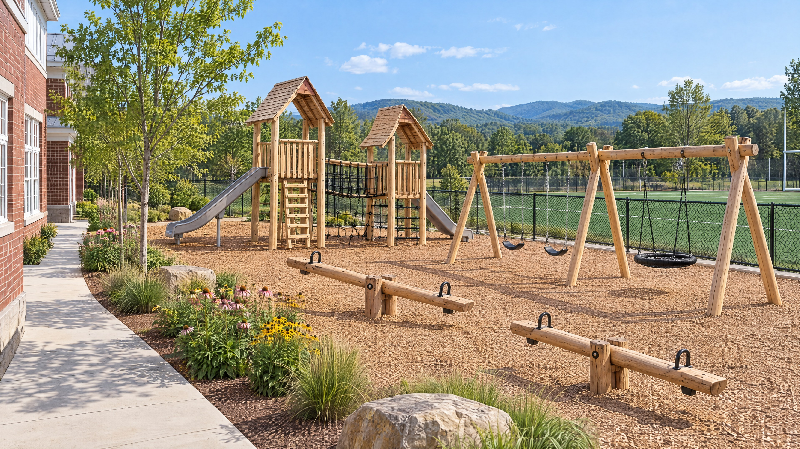

GROWING MINDS. ROOTED IN POSSIBILITY.
Learning
by doing.
A garden becomes a laboratory.
A climb becomes a breakthrough.
A little curiosity becomes a lifetime of discovery.
Explore the proposed K–4 Outdoor Learning Lab & Playground.
Opening the garden gate…
Drag to look around · Arrow keys or W A S D to walk
01 / 08OBSERVE + MEASURE
The Butterfly Garden
CONCEPTUAL DESIGN